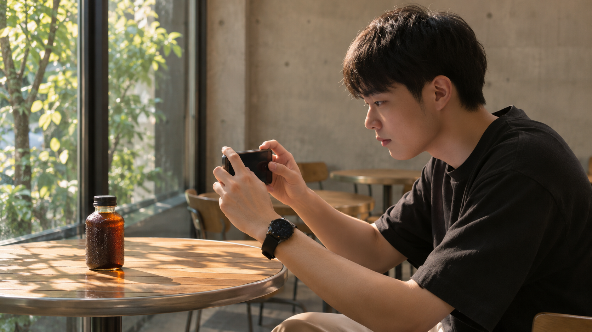

写真リレー式 商品PR動画はじめ方
写真1枚から、10秒の商品PRへ
3枚の作例画像に動きを付けた、10秒の構成見本です。コーヒーボトルの「全体→質感→全体」を見せます。
構成も、次の指示もAIに任せる。
僕は商品を撮ったら、まずChatGPTに絵コンテを作ってもらいます。次はそれを動画用の指示に変えて、Geminiへ。自分で一から構成を書かず、前の出力を次へ渡すやり方です。
試したときは10分くらいで、半分以上はAIの回答待ちでした。ずっと自分が手を動かす作業ではなかったんですよね。
時間は僕が試したときの一例です。生成の待ち時間や修正量は変わります。
用意するもの：使う権利のある商品写真、画像生成が使えるChatGPT、動画生成が使えるGemini。Geminiの個人利用にはGoogle AIプランが必要で、18歳以上が対象です。
Gemini公式の利用条件・操作案内（2026年11月7日確認）
商品の形が分かる写真を撮る

明るい場所で、商品の全体が切れないように1枚。背景を片づけて、別の商品や不要な文字が写り込まないようにします。
琥珀色の瓶
黒いキャップ
商品は1本
写真 ＋ 「10秒の絵コンテを画像で」
このページでは架空商品の作例写真を使います。自分の商品では、ラベル・色・形が読み取れる写真へ入れ替えてください。

目印：ChatGPTの入力欄に写真が添付されていれば、次へ。
絵コンテを画像で作る
写真と一緒に、下の指示を送ります。自分の商品なら【今回の商品】と【用途】を書き換えます。見せ方をまず画像にすると、次に動画へ渡す内容が見えます。
絵コンテの指示文を開く
添付した商品写真を分析して、プロデザイナーが作るような10秒の商品PR動画の絵コンテを、1枚の画像で作ってください。 【今回の商品】ラベルのない琥珀色のコーヒーボトル 【用途】商品紹介のサンプル動画 【画面】横長16:9 【雰囲気】深い緑の背景、暖かな光、落ち着いた印象 【見せる順番】0〜3秒：商品の全体 → 3〜7秒：瓶の質感へ寄る → 7〜10秒：全体を見せて締める 3カットの画像と、それぞれの秒数・カメラの動きを入れてください。瓶の形、色、黒いキャップは元写真を保ち、商品自体は置いたままにしてください。商品名、効能、価格、実績など、写真から分からない情報は追加しないでください。文字・ロゴ・人物・派手な液体の飛沫は入れないでください。 画像と一緒に、各カットで何を見せるかを短く説明してください。
構成からAIに任せる。
僕が最初に頼んだのは「プロデザイナーが作るような10秒の絵コンテ」。構成案までAIに出してもらうから、写真を撮ったあとに始めやすいんです。
商品が変わる演出は、先に直す
今回の作例は、瓶そのものを紹介する動画。もしAIが派手に動かす案を出したら、動画へ渡す前に、見せたい形が残る構成へそろえます。
修正例：「瓶の形は元写真を保って、瓶は置いたまま。カメラだけゆっくり寄る構成に直して」
目印：何秒で何を見せるか、画像で追えれば次へ。
動画用の指示を作る
同じChatGPTの会話で、続けて「Gemini Omniで動画にするためのプロンプトにして」と頼みます。写真と絵コンテの話がつながった状態で、次の指示も任せます。
→ 全体
瓶は固定
カメラが寄る
動画の指示へ変える文を開く
この絵コンテをもとに、Gemini Omniで動画にするためのプロンプトにしてください。 元の商品写真もGeminiへ添付して使います。参照写真の瓶の形・色・黒いキャップを保ち、商品を増やさないでください。 横長16:9、全体は10秒を目安に、0〜3秒は全体、3〜7秒は質感へ寄る、7〜10秒は全体で締める流れです。 瓶は置いたまま、カメラだけゆっくり動かしてください。深い緑の背景と暖かな光を使い、文字・ロゴ・人物・ナレーション・音楽は入れません。 カットごとの被写体、カメラ、背景、光を含め、そのままコピーして送れる一つの指示文にまとめてください。 利用する画面の対応尺が10秒と異なる場合は、上の3カットの比率を保って対応する尺へ調整できる形にしてください。
Geminiへ送る作例を開く
添付した商品写真を参照して、横長16:9の落ち着いた商品PR動画を作成してください。全体は10秒を目安にしてください。 主役はラベルのない琥珀色のコーヒーボトル1本です。元写真の瓶の形、色、黒いスクリューキャップを保ち、商品を増やしたり変形させたりしないでください。瓶は暗いテーブルの上に置いたまま。背景は深い緑、光は暖かな琥珀色です。 0〜3秒：瓶の全体を正面から見せ、ゆっくり少しだけカメラを近づける。 3〜7秒：瓶の表面の水滴と琥珀色のガラスへ穏やかに寄る。瓶の輪郭を崩さない。 7〜10秒：全体が見える構図へ戻り、最後の1秒は安定した画で止める。 派手な回転、飛沫、注ぐ動きは不要です。文字、ロゴ、人物、ナレーション、音楽は追加しないでください。写真から分からない商品情報や効能も加えないでください。自然な映り込みと一貫した商品の形を優先してください。
出てきた指示文をコピーします。途中に商品名や効能が勝手に追加されていないかを読み、違う部分だけ直してください。
目印：「何を」「どう動かすか」が書かれた指示文をコピーできれば次へ。
Geminiで動画を作る
スマホでGeminiを開き、左上のメニューから「動画」へ。元の商品写真を追加して、コピーした動画用の指示を貼り付け、送信します。
画像を追加：元の商品写真
入力欄：手順3でコピーした動画用の指示
図は操作の関係を示しています。表示名や配置は端末・提供状況により変わる場合があります。
元写真も、渡し直す。
ChatGPTの会話はGeminiへ自動では移りません。僕のやり方も、元の写真をGeminiに入れてから、動画用の指示を送っています。
画面に縦横比の設定があれば、作例は16:9へ。対応する動画の長さも確認してください。10秒の指定どおりにならない場合は、利用できる尺に合わせて手順3の配分を調整します。
Gemini公式：スマホでの生成・保存。動画が選べない場合は、アカウントの利用条件と提供状況を確認します。
動画を直して保存する
動き：増えない・崩れない
締め：全体が見える
最後まで再生して、気になる秒数と、直す点を一つずつ伝えます。たとえば瓶の形だけが違うなら、そこだけを元写真に戻すよう頼みます。
修正の指示文を開く
この動画の【3〜7秒】だけを修正してください。 【気になる点】瓶の形が元写真と変わっている。 添付した元写真の瓶の輪郭と黒いキャップへ戻してください。瓶は置いたまま、カメラがゆっくり近づく動きにしてください。 他のカット、背景、光、全体の雰囲気は保ってください。 商品名・文字・人物は追加しないでください。
商品・尺
を選ぶ
再生する
「共有」から端末への保存を選びます。PCでは動画の下のメニューから「動画をダウンロード」。保存先で開き、再生できたところまで確認しましょう。
10秒より長くできた場合は、スマホの動画編集で前後を切れます。短い場合は再生成や追加カットが必要です。最初は、利用できる尺で3カットが成立する1本を完成させてください。
まず1商品で、写真→構成→動画→保存を一周。
案件にする前の確認
今回のような動画をデザイン案件へつなげるなら、見本を作った次に、何に使う動画かを決めます。短い商品紹介でも、掲載先で必要な比率や尺は違うからです。
上は提案準備の例です。受注や販売実績を示すものではありません。料金は用途と納品条件を決めてから設定します。
作例と指示を保存する
ページ・作例写真・10秒の構成見本・4つの指示文・提案前の確認メモを一式で保存できます。
ZIPは「ファイル」アプリ等で展開し、中の「index.html」をブラウザーで開きます。写真・動画・本文はネット接続なしで見返せます。AIで生成するときは各サービスへの接続が必要です。
AI副業の進め方を知る
商品PRの見本ができたら、次はAI副業として何をするか。ここからの進め方をまとめた「AIマネタイズの教科書」を、僕の公式LINEでお渡ししています。
まずこの手順で1本作ってみて、その次を知りたいときに受け取ってください。
 公式LINEで教科書を受け取る →
公式LINEで教科書を受け取る →